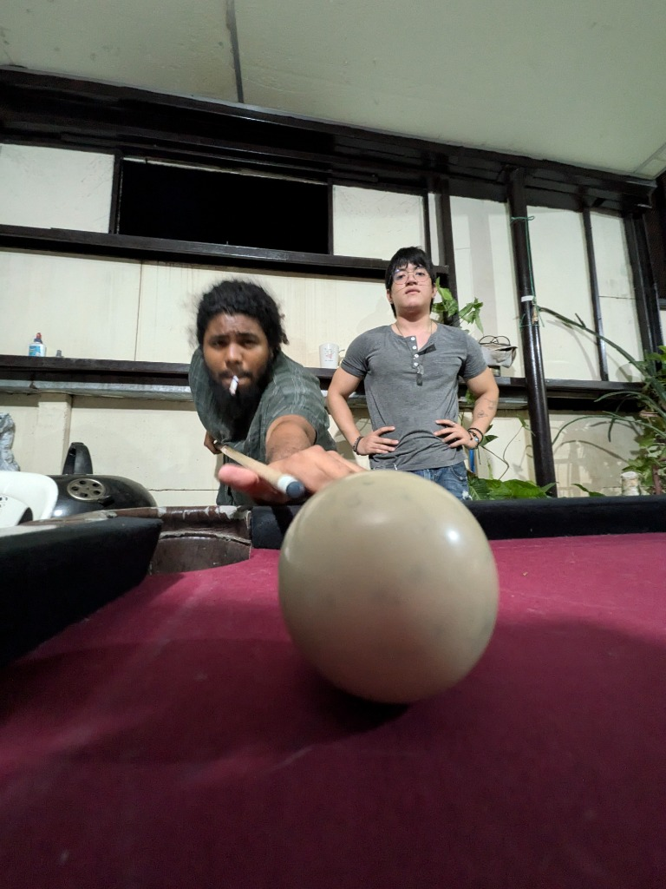

Mi Perfil Personal
Analista de Datos @ Dragontec (Samsung) | Creador & Gamer
Sobre Mí
¡Hola! Soy analista de datos en Dragontec prestando servicios para Samsung. Me apasiona el análisis cuantitativo, el desarrollo interactivo y el diseño de experiencias visuales. Cuando no estoy analizando métricas o modelando datos, me encuentro explorando la creación de contenido técnico o compitiendo en línea. Actualmente le estoy metiendo horas pesadas a Deadlock (¡en serio, jueguen Deadlock, joya total!).
Áreas de Interés & Pasatiempos

⚽ Fútbol
Seguidor apasionado del fútbol internacional. Hincha fiel del Manchester United en las buenas y en las malas.

🎮 Desarrollo en Roblox & Gaming
Creador técnico en la plataforma: desarrollo de scripts en Luau, modelado de assets 3D y diseño de VFX (efectos visuales). Además, en el plano competitivo: ¡jueguen Deadlock, tremendo juego!

📚 Literatura & Manga
Lector voraz de ciencia ficción, fantasía épica y seinen clásico. Algunas de mis obras de cabecera:
- Red Rising - Pierce Brown
- The Lord of the Rings - J.R.R. Tolkien
- Nacidos de la Bruma (Mistborn) - Brandon Sanderson
- Dune - Frank Herbert
- Fundación - Isaac Asimov
- MW y Apollo's Song - Osamu Tezuka
- One Piece - Eiichiro Oda
- Trigun - Yasuhiro Nightow
- Kiichi!! - Hideki Arai
- El lobo solitario y su cachorro - Kazuo Koike & Goseki Kojima